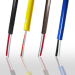
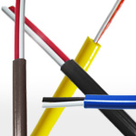
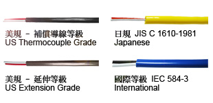

- 一般電線電纜-PVC
- 矽膠編織耐熱線系列
- 高溫線系列
- 矽膠耐熱線系列
- 鐵氟龍系列
- 交連照射線系列
- 套管系列
- 補償導線系列
- 發熱線系列
- 汽車花線
- JASO AV
- JASO AVS
- JASO AVSS
- JASO AVSSH
- JASO AEX
- JASO AVX
- JASO AESSX
- JASO CAVS
- JASO CAVUS
- JASO CHFUS
- JASO HFSS
- JASO CIVUS
- JASO IVSSH
- JASO ASSSH / SH-SX / SH-SH
- JASO LE-SS / LE-SX / LE-SH
- SAE GPT
- SAE TWP
- SAE HDT
- SAE GXL
- SAE SXL
- SAE TXL
- ISO FLRY-A
- ISO FLRY-B
- ISO FLRYnx
- ISO FLRYY
- ISO FLRYW-A
- ISO FLRYW-B
- ISO FLY
- ISO FLYW
- ISO FLYY Single
- ISO FLYY Multi
- ISO FL2X-A
- ISO FL2X-B
- ISO FLR2X-A
- ISO FLR2X-B
- ISO FLR13Y-A
- 特殊訂製線材


| 絕緣體種類特性 | |||||||
| 種類 Material |
適用溫度 Temp Range (°C) |
耐燃性 Flame Retardant |
耐磨性 Friction Resistance |
耐油性 Oil Resistance |
耐酸鹼性 Chemical Resistance |
耐濕性 Waterproof |
可繞性 Flexibility |
| 塑膠 PVC |
-10 ~ 105 | Bad | Good | Bad | Fair | Good | Excellent |
| 橡膠 EPR/HYP Rubber |
-15 ~ 110 | Bad | Good | Good | Good | Good | Excellent |
| 矽膠 Silicone |
-60 ~ 200 | Good | Good | Excellent | Excellent | Excellent | Excellent |
| 聚合氟化物 FEP Fluoropolymer FEP |
-100 ~ 200 | Excellent | Excellent | Excellent | Excellent | Excellent | Good |
| 聚合氟化物 PFA Fluoropolymer PFA |
-267 ~ 260 | Excellent | Excellent | Excellent | Excellent | Excellent | Good |
| 聚醯亞胺 KAPTON |
-267 ~ 316 | Good | Good | Good | Good | Fair | Fair |
| 玻璃纖維 Fiberglass |
-100 ~ 500 | Excellent | Fair | Fair | Excellent | Bad | Fair |
| 耐高溫陶瓷纖維 Ceramic Fiber |
-100 ~ 1200 | Excellent | Bad | Fair | Excellent | Bad | Fair |
| 絕緣體縮寫表 | 導體縮寫表 | ||||
| 中文 | English | Abbreviation | 中文 | English | Abbreviation |
| 塑膠 | PVC | P | 無氧銅 | Oxyen-Free Copper | OFC |
| 橡膠 | EPR/HYP Rubber | R | 銅鎳合金 | Ni-Copper | Ni-Cu |
| 矽膠 | Silicone Rubber | S | 鎳鉻合金 | Nickel-Chromiun | Ni-Cr |
| 聚合氟化物 FEP | Fluoro FEP | T | 鎳鋁合金 | Nickel-Alumel | Ni-Al |
| 聚合氟化物 PFA | Fluoropolymer PFA | T | 鐵 | Iron | Iron/Fe |
| KAPTON | KAPTON | K | 鍍錫銅 | Tinned Copper | Tc |
| 玻璃纖維 | Fiberglass | G | 鍍包鋼 | Copper Claded Steel | CCS |
| 耐高溫陶瓷纖維 | Ceramic Fiber | C | 不鏽鋼 | Stainless Steel | SUS304 |
| 雲母 | Mica | M | 純鎳 | Pure Nickel | PN |
| 代號 Wire Code |
規格 Specification |
線徑 Dimension |
絕緣材質 Insulation Material |
導體材質 Conductor Material |
環境溫度 Temperature Range (°C) |
米/卷 Meters/ Coil |
||
| ID (mm) | OD (mm) H x L |
正極 (+) | 負極 (-) | |||||
| JX-PP-22S | 0.3/4 x 2 (22 AWG) | 1.45 | 2.50 x 3.80 | PVC | Iron | Ni-Cu | 0 ~ 105 | 200 |
| JX-PP-20S | 0.3/7 x 2 (20 AWG) | 1.50 | 2.50 x 3.80 | PVC | Iron | Ni-Cu | 0 ~ 105 | 200 |
| JX-PP-16S | 0.6/4 x 2 (16 AWG) | 2.45 | 4.50 x7.00 | PVC | Iron | Ni-Cu | 0 ~ 105 | 200 |
| JX-PP-14S | 0.6/7 x 2 (14 AWG) | 2.80 | 4.50 x 7.20 | PVC | Iron | Ni-Cu | 0 ~ 105 | 200 |
| JX-P1P-14S | 0.6/7 x 2 (14 AWG) | 2.80 | 4.90 x 7.60 | PVC-SUS304 | Iron | Ni-Cu | 0 ~ 105 | 200 |
| JX-1PP-14S | 0.6/7 x 2 (14 AWG) | 2.80 | 5.80 x 8.00 | PVC-SUS304 | Iron | Ni-Cu | 0 ~ 105 | 200 |
| JX-GG-28N | 0.3 x 2 (28 AWG) | 0.75 | 1.40 x 2.50 | 玻璃纖維 Fiberglass |
Iron | Ni-Cu | 0 ~ 200 | 200 |
| JX-GG-22N | 0.6 x 2 (22 AWG) | 1.10 | 2.00 x 3.20 | 玻璃纖維 Fiberglass |
Iron | Ni-Cu | 0 ~ 200 | 200 |
| JX-GG-22S | 0.3/4 x 2 (22 AWG) | 1.20 | 2.05 x 3.30 | 玻璃纖維 Fiberglass |
Iron | Ni-Cu | 0 ~ 200 | 200 |
| JX-GG-20S | 0.3/7 x 2 (20 AWG) | 1.50 | 2.00 x 3.50 | 玻璃纖維 Fiberglass |
Iron | Ni-Cu | 0 ~ 200 | 200 |
| JX-GG-16S | 0.6/4 x 2 (16 AWG) | 2.15 | 2.90 x 4.60 | 玻璃纖維 Fiberglass |
Iron | Ni-Cu | 0 ~ 200 | 200 |
| JX-GG-14S | 0.6/7 x 2 (14 AWG) | 2.40 | 3.30 x 5.20 | 玻璃纖維 Fiberglass |
Iron | Ni-Cu | 0 ~ 200 | 200 |
| JX-1GG-24N | 0.5 x 2 (24 AWG) | 1.00 | 1.65 x 2.85 | 玻璃纖維-不鏽鋼網 Fiberglass-SUS304 |
Iron | Ni-Cu | 0 ~ 200 | 200 |
| JX-1GG-22N | 0.6 x 2 (22 AWG) | 1.10 | 1.75 x 2.95 | 玻璃纖維-不鏽鋼網 Fiberglass-SUS305 |
Iron | Ni-Cu | 0 ~ 200 | 200 |
| JX-1GG-22S | 0.3/4 x 2 (22 AWG) | 1.20 | 1.80 x 3.05 | 玻璃纖維-不鏽鋼網 Fiberglass-SUS306 |
Iron | Ni-Cu | 0 ~ 200 | 200 |
| JX-TT-28N | 0.3 x 2 (28 AWG) | 0.65 | 1.20 x 1.80 | 聚合氟化物 Fluoropolymer |
Iron | Ni-Cu | 0 ~ 200 | 200 |
| JX-TT-24N | 0.5 x 2 (24 AWG) | 0.85 | 1.20 x 1.85 | 聚合氟化物 Fluoropolymer |
Iron | Ni-Cu | 0 ~ 200 | 200 |
| JX-TT-22N | 0.6 x 2 (22 AWG) | 1.05 | 1.50 x 2.50 | 聚合氟化物 Fluoropolymer |
Iron | Ni-Cu | 0 ~ 200 | 200 |
| JX-KK-24N | 0.5 x 2 (24 AWG) | 1.00 | 1.20 x 2.20 | KAPTON | Iron | Ni-Cu | 0 ~ 316 | 200 |
| JX-KK-24S | 0.2/7 x 2 (24 AWG) | |||||||